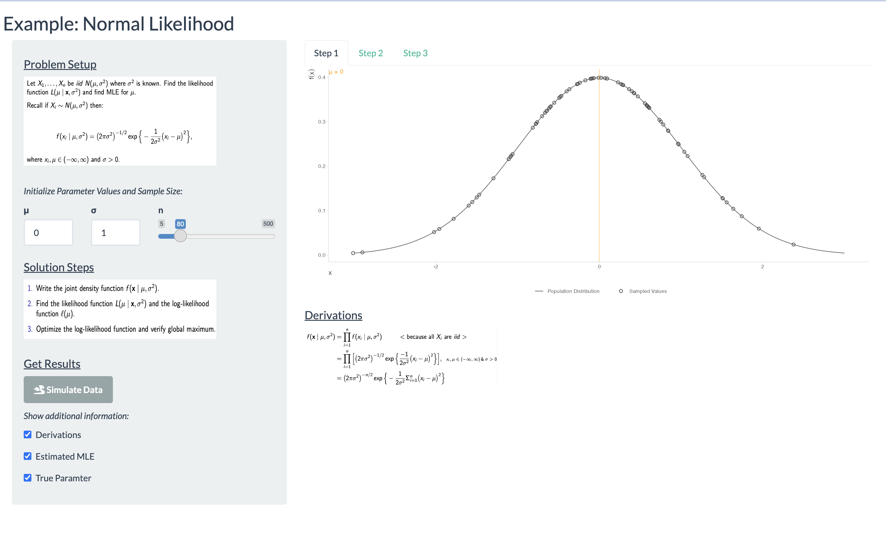
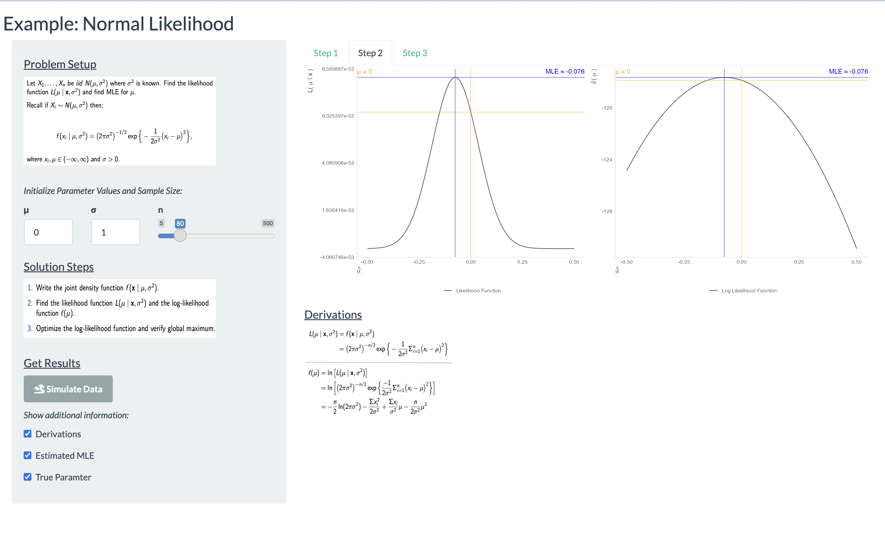
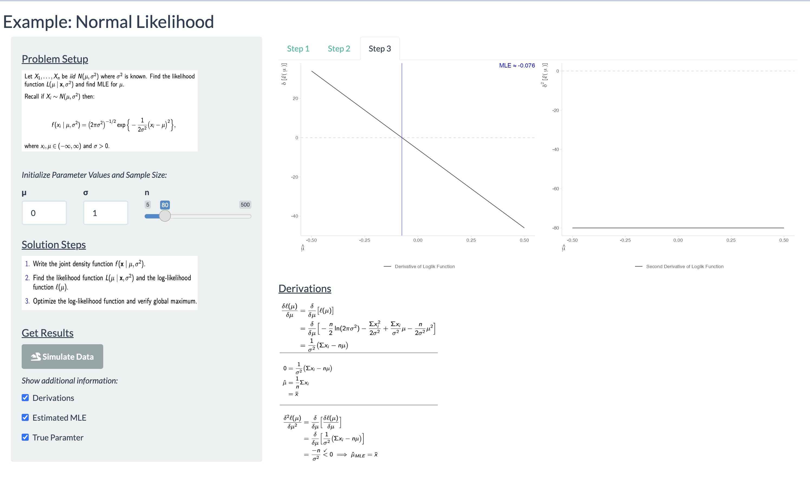

### ---- Load packages and set options ----
# load necessary packages
library(tidyverse)
library(magrittr)
library(shiny)
library(ggpubr)
library(shinythemes)
# create default storytelling with data theme
theme_swd <- theme_minimal() +
theme(
# titles and captions
plot.title = element_text(size = rel(1.75),
color = "grey30"),
plot.subtitle = element_text(size = rel(1.25),
color = "grey30"),
plot.caption = element_text(hjust = 0,
color = "grey30"),
# axes
axis.title.x = element_text(hjust = 0,
color = "grey30"),
axis.title.y = element_text(hjust = 1,
color = "grey30"),
axis.line = element_line(color = "grey90"),
axis.ticks = element_line(color = "grey90"),
# plot background and gridlines
panel.background = element_blank(),
panel.grid.major = element_blank(),
panel.grid.minor = element_blank(),
# legend
legend.title = element_text(color = "grey30"),
legend.text = element_text(color = "grey30")
)
# set global plot theme
theme_set(theme_swd)Dashboard
Tab 1

Tab 2

Tab 3

Code
Pre code
UI
### ---- Define UI ----
# create user interface
# -> set shiny theme as well
ui <- fluidPage(theme = shinytheme("flatly"),
#tabsetPanel(id = "tabs",
#tabPanel("Normal",
# application title
titlePanel("Example: Normal Likelihood"),
# add sidebar
sidebarPanel(
# sectin label
h4(tags$u("Problem Setup")),
# text block of description and formulas
# -> this is how to do it with just typing it in there...
# p("Let X1,..., Xn be iid N(μ, σ^2) where σ^2 is known. Find the likelihood function L(μ | x) and find the Maximum Likelihood Estimator (MLE) of μ."),
# p("Recall if Xi ~ N(μ, σ), then:"),
# p(withMathJax("$$f(x_i \\mid \\mu) = (2 \\pi)^{-1/2} \\exp \\big\\{-\\frac{1}{2} \\big(\\frac{x_i - \\mu}{\\sigma}\\big)^2\\big\\}, \\\\x_i, \\mu \\in (-\\infty, \\infty) \\quad \\& \\quad \\sigma > 0.$$")),
# insert image with the problem setup
# resource for how to get poictures in-> http://shiny.rstudio-staging.com/tutorial/written-tutorial/lesson2/
img(src = "problem-setup.png",
height = 150,
width = 325),
# just using this to space things out
# probably a better way, but this suffices for now...
p(tags$br()),
p(tags$i("Initialize Parameter Values and Sample Size:")),
# add columns within sidebar panel
fluidRow(
# first item
column(width = 3,
# input true value for the parameter of interest mu
# -> default to zero so that it is the standard normal curve
# -> no restrictions on the value
numericInput("theta",
label = "μ",
value = 0)),
# second item
column(width = 3,
# input value for the other needed parameter
# -> default to one so that it is the standard normal curve
# -> must be positive
# -> ????? investigate if need to increase to 0.001 or something like that
# -> ?? and can you still run it with a negative? or type it in?
numericInput("sigma",
label = "σ",
value = 1,
min = 0)),
# second item
column(width = 6,
# slider to input sample size
sliderInput(inputId = "sample_size",
label = "n",
min = 5,
max = 500,
value = 25,
step = 5,
round = FALSE,
ticks = FALSE))
), # fluid row
# section label
h4(tags$u("Solution Steps")),
# insert image with the written steps
img(src = "steps-written.png",
height = 100,
width = 325),
p(tags$br()),
# section label
h4(tags$u("Get Results")),
# action button to generate data
actionButton(inputId = "run",
label = tags$b("Simulate Data"),
icon = icon(name = "dragon")),
p(""),
# text description
p(tags$i("Show additional information:")),
# check boxes for whether or not to include extra info
checkboxInput(inputId = "show_derivations",
label = "Derivations",
value = FALSE),
checkboxInput(inputId = "show_est",
label = "Estimated MLE",
value = FALSE),
checkboxInput(inputId = "show_true",
label = "True Paramter",
value = FALSE)
), # sidebar panel
# add output spot
mainPanel(
# set tabs for different output
tabsetPanel(id = "tabs_step1",
# first tab
tabPanel("Step 1",
# plot of joint denstiy function
plotOutput("plot_joint_density"),
# panel to display results of simulation after generating data
conditionalPanel(condition = "input.show_derivations == 1",
h4(tags$u("Derivations")),
# insert image with joint density derivation
img(src = "step1.png",
height = 100,
width = 325),
) # conditional panel
), # tab panel
# second tab
tabPanel("Step 2",
# histograms of sampled values and marginal curves
plotOutput("plot_liks"),
# panel to display results of simulation after generating data
conditionalPanel(condition = "input.show_derivations == 1",
h4(tags$u("Derivations")),
# insert image with likelihood and log-likelihood function derivations
img(src = "step2.png",
height = 150,
width = 250),
) # conditional panel
), # tab panel
# third tab
tabPanel("Step 3",
# plots of estimated and actual density curves
plotOutput("plot_derivatives"),
# panel to display results of simulation after generating data
conditionalPanel(condition = "input.show_derivations == 1",
h4(tags$u("Derivations")),
# insert image with derivatives of log likelihood derivations
img(src = "step3.png",
height = 300,
width = 300)
) # conditional panel
) # tab panel
) # tab panel
) # main panel
# ) # tab panel
# ) # tabset panel
) # fluid pageServer
### ---- Define server ----
# create server
server <- function(input, output) {
## --- Simulate data and perform calculations for the normal likelihood example ----
# function to generate data and create modified datasets
# -> call this function in place of the 'dataframe' if need to create a modified dataset or make a plot
# -> returns a list of the modified datasets
get_new_data <- reactive({
# set random seed
# -> set the the value of the action button so that it takes dependence on it and will cause this data function to be rerun each time the button is clicked
set.seed(input$run)
# create object to store datasets
data <- list(data_x = NULL, data_mle = NULL, data_max_lik = NULL, data_true_lik = NULL)
# NOTE on code
# using theta as the parameter of interest for all of the code so that it is general and can easily adapt to new situation
# can change to my or alpha or whatever it should be on the plot labels when finalizing
# initialize info
# -> sample size
# -> parameter and sample size information are specified by the user, so don't have to initialize those
groups <- c("curve",
"sample")
# simulate data
# "sampling" x data to cover the range of the curve so that can get a picture of the whole distribution
# -> so just use the mean +/- 3 sd and make the sequence a set length so that it doesn't depend on the values of theta and sigma
# -> assuming standard normal population curve
# then use the density function to get the functional values at each of the sampled xs
data[["data_x"]] <- data.frame(x = seq(from = input$theta - 3 * input$sigma,
to = input$theta + 3 * input$sigma,
length.out = 100),
group = groups[1]) %>%
bind_rows(data.frame(x = rnorm(n = input$sample_size,
mean = input$theta,
sd = input$sigma),
group = groups[2])) %>%
mutate(f_x = dnorm(x = x,
mean = input$theta,
sd = input$sigma)) %>%
select(group, x, f_x)
# initialize vector of potential values for the estimator of theta, the main parameter of interest
# -> setting values to span several values to either side, but keeping general so still works regardless of the scale
# -> and make a set length, which is the total number of parameter values to use (making larger cause not showing points on the likelihood plots, so can be more fine)
# also add in the true parameter value so that it is the max of the likelihood
# then sort to be in increasing order
theta_hat <- c(seq(from = input$theta - 0.5 * input$sigma,
to = input$theta + 0.5 * input$sigma,
length.out = 1000),
input$theta) %>%
sort
# do a series of calculations to create information needed to plot different mle related functions
# lapply() allows the function to do the same set of calculations for each of the different theta_hats
# then finally combine all the rows into a single organized dataframe, where each row (theta_hat value) / column (all other columns) pair represents an (x,y) coordinate for plots showing the different steps in the mle process
data[["data_mle"]] <- lapply(X = theta_hat, FUN = function(theta_hat_i, x_data){
# calculate the value of the likelihood function for the specific theta_hat value
# -> just does the product of the (density) functional values of each of the observed xs under the population distribution with the newly assumed parameter value
# -> result is just a single number
# -> these steps are following the derived formula for the likelihood
# --> just able to use dnorm() and the prod() function to do the heavy lifting
likelihood <- dnorm(x = x_data$x,
mean = theta_hat_i,
sd = input$sigma) %>%
prod
# calculate the log-likelihood by doing a log transformation
loglik <- log(likelihood)
# calculate the first derivative of the loglik
# -> still uses the derived formulas, except this time there is no function "shortcut"
d_loglik <- sum(x_data$x) - nrow(x_data) * theta_hat_i
# calculate the second derivative of the loglik
# -> still uses the derived formulas, except this time there is no function "shortcut"
d2_loglik <- -1 * nrow(x_data)
# combine results into a single dataframe indexed by the specific theta_hat and return
# -> result is a one row dataframe with MLE related info under this parameter value
data.frame(theta_hat = theta_hat_i,
likelihood,
loglik,
d_loglik,
d2_loglik) %>%
return
}, x_data = filter(data[["data_x"]], group == "sample")) %>%
Reduce(f = bind_rows,
x = .)
# find the row with the max likelihood
# use head() to ensure that the resulting dataframe only has one row
# -> if th max likelihood value matched to more than one theta_hat value, then multiple MLE lines would be plotted which is not desired
# -> so now een if there is multiple, head will only return one (and obviously they will be so close together) and if there is only a unique max this wont throw an error
data[["data_max_lik"]] <- data[["data_mle"]] %>%
filter(likelihood == max(likelihood)) %>%
head(n = 1)
# not flawless cause with a sample size of like 1000 something goes weird with the likelihood function...
# but good enough
# find the row with the theta_hat of the true parameter value
data[["data_true_lik"]] <- data[["data_mle"]] %>%
filter(theta_hat == input$theta)
# return list of the four datasets
return(data)
}) # event reactive
## ---- Plot of joint density ----
# render plot of joint density after generating new data
output$plot_joint_density <- renderPlot({
# take a dependency on action button
# -> and prevent it from returning a plot the first time (ie don't run code until action button is hit)
if (input$run == 0) {
return()
}
# use isolate to avoid dependency on action button
isolate({
# this is a make-shift way of preventing the code from running if an invalid standard deviation value is entered
# -> the condition makes sure this code block doesn't run before hitting the button for the first time and only for an invalid sigma value
if (input$run != 0 & input$sigma <= 0) {
# create an empty plot essentially that contains the desired error message
g <- ggplot() +
annotate(geom = "text",
label = "Please enter a value for σ greater than zero!",
color = "red",
x = 1,
y = 1) +
theme_void()
# return plot
# -> for some reason, the () strategy and using plot() doesnt work??
# -> but it does work as desired if you explicitly return the plot object
return(g)
}
# create base plot of sample data and joint density function
# points are the functional values at the observed xs plotted on the assumed population curve (for visual purposes)
# line plot of the theoretical joint density
# having to do the trick with the aes labels to get the legend to show up with meaningful labels
# placing the legend at the bottom
plot_joint_density <- ggplot() +
geom_point(aes(x = x,
y = f_x,
fill = "Sampled Values"),
data = filter(get_new_data()[["data_x"]], group == "sample"),
shape = 1,
size = 2,
stroke = 0.75,
color = "grey30") +
geom_line(aes(x = x,
y = f_x,
color = "Population Distribution"),
data = filter(get_new_data()[["data_x"]], group == "curve")) +
scale_fill_manual(values = "white") +
scale_color_manual(values = "grey40") +
labs(x = expression(x),
y = expression(f(x)),
color = "",
fill = "") +
theme(legend.position = "bottom")
# set initial plot to be displayed
# -> better description of how this works with the likelihood plots
plot_joint_density_display <- plot_joint_density
# add theoretical (true) parameter information to the joint density plot
# -> this is to reinforce the idea that the sample data was under a normal distribution with this particular mean
# -> but when calculating the likelihood, that curve shifts
if(input$show_true == 1) {
plot_joint_density_display <- plot_joint_density +
geom_vline(xintercept = input$theta,
color = "orange",
alpha = 0.5) +
annotate(geom = "text",
label = paste0("\u03BC = ", input$theta),
x = -Inf,
y = Inf,
hjust = 0,
vjust = 1,
color = "orange")
}
# display plot
plot(plot_joint_density_display)
}) # isolate
}) # render plot
## ---- Plot of likelihood and log likelihood ----
# render likelihood and log likelihood plots after generating new data
output$plot_liks <- renderPlot({
# take a dependency on action button
# -> and prevent it from returning a plot the first time (ie don't run code until action button is hit)
if (input$run == 0) {return()}
# use isolate to avoid dependency on action button
isolate({
# error check for invalid standard deviation value
if (input$run != 0 & input$sigma <= 0) {
# create an empty plot essentially that contains the desired error message
g <- ggplot() +
annotate(geom = "text",
label = "Please enter a value for σ greater than zero!",
color = "red",
x = 1,
y = 1) +
theme_void()
# return plot
return(g)
}
# create base plot of likelihood function
# line is the likelihood values across the set of theta hat values
# -> not showing the points so that the joint density plot isn't as easily confused with this new set of plots
plot_lik <- ggplot() +
geom_line(aes(x = theta_hat,
y = likelihood,
color = "Likelihood Function"),
data = get_new_data()[["data_mle"]]) +
scale_fill_manual(values = "white") +
scale_color_manual(values = "grey30") +
labs(x = expression(hat(mu)),
y = expression("L("~mu~"|"~x~")"),
color = "",
fill = "") +
theme(legend.position = "bottom")
# set initial plot to be displayed
# -> then conditionally update (based on the checkboxes) which information gets added to the plot that will be displayed
# -> if conditions are met, the plot object for the display plot will be updated accordingly
# -> this same-named but potentially updated plot object is what will then be given to ggarrange()
# this is the default and is like the if(input$show_est == 0 & input$show_est == 0) condition
plot_lik_displayed <- plot_lik
# add estimated MLE information to the base likelihood plot
# -> the two lines cross, which is just a cool visual feature
# -> using blue for all these features, and the lines are slightly transparent so they don't stand out too much
# vertical line is at the theta_hat value where the likelihood function is maximized
# horizontal line is at the functional value at the estimated MLE
# then add an annotation for what the actual estimated MLE value is
if(input$show_est == 1 & input$show_true == 0) {
plot_lik_displayed <- plot_lik +
geom_vline(xintercept = get_new_data()[["data_max_lik"]]$theta_hat,
color = "blue",
alpha = 0.5) +
geom_hline(yintercept = get_new_data()[["data_max_lik"]]$likelihood,
color = "blue",
alpha = 0.5) +
annotate(geom = "text",
label = paste0("MLE ≈ ", round(get_new_data()[["data_max_lik"]]$theta_hat, 3)),
x = Inf,
y = Inf,
hjust = 1,
vjust = 1,
color = "blue")
}
# add theoretical (true) parameter information to the base likelihood plot
# -> the two lines cross, which is just a cool visual feature
# -> using orange for all these features
# vertical line is at the theta value used to generate the sample data
# -> this will be slightly different than the theta_hat value where the likelihood function is maximized, as it should be
# horizontal line is at the functional value for the true parameter value
# -> again will not be at the max of the likelihood function because the likelihood is based on the sample data, so sampling variability
# then add an annotation for what the true value is
if(input$show_est == 0 & input$show_true == 1) {
plot_lik_displayed <- plot_lik +
geom_vline(xintercept = input$theta,
color = "orange",
alpha = 0.5) +
geom_hline(yintercept = get_new_data()[["data_true_lik"]]$likelihood,
color = "orange",
alpha = 0.5) +
annotate(geom = "text",
label = paste0("\u03BC = ", input$theta),
x = -Inf,
y = Inf,
hjust = 0,
vjust = 1,
color = "orange")
}
# add both the estimated MLE information and the theoretical (true) parameter information to the base likelihood plot
# -> annotations were originally placed in different upper corners so they don't overlap
# -> plotting both at the same time shows the differences between the estimated and true parameter value
# -> this helps illustrate that we are estimating and getting close, but not exact
if(input$show_est == 1 & input$show_true == 1) {
plot_lik_displayed <- plot_lik +
geom_vline(xintercept = get_new_data()[["data_max_lik"]]$theta_hat,
color = "blue",
alpha = 0.5) +
geom_hline(yintercept = get_new_data()[["data_max_lik"]]$likelihood,
color = "blue",
alpha = 0.5) +
annotate(geom = "text",
label = paste0("MLE ≈ ", round(get_new_data()[["data_max_lik"]]$theta_hat, 3)),
x = Inf,
y = Inf,
hjust = 1,
vjust = 1,
color = "blue") +
geom_vline(xintercept = input$theta,
color = "orange",
alpha = 0.5) +
geom_hline(yintercept = get_new_data()[["data_true_lik"]]$likelihood,
color = "orange",
alpha = 0.5) +
annotate(geom = "text",
label = paste0("\u03BC = ", input$theta),
x = -Inf,
y = Inf,
hjust = 0,
vjust = 1,
color = "orange")
}
# strategy for getting fancy labels in ggplot
# -> resource for getting greek letters in labels for ggplot with expression()-> https://stackoverflow.com/questions/5293715/how-to-use-greek-symbols-in-ggplot2
# -> also using unicode occasionally when needing to combine a value with a greek letter
# -> or putting fancy symbols directly in here if possible
# -> so really no strategy, just piecemealing it to do what is needed
# create base plot of log likelihood function
# -> all features / interpretations / rationale is the same as for the likelihood plot, except now for the loglik
# -> same for the additional plots as well
# log likelihood function will have same shape and same name nature / location of the extrema, which demonstrates that maximizing this and the regular likelihood function is equivalent
plot_loglik <- ggplot() +
geom_line(aes(x = theta_hat,
y = loglik,
color = "Log Likelihood Function"),
data = get_new_data()[["data_mle"]]) +
scale_fill_manual(values = "white") +
scale_color_manual(values = "grey30") +
labs(x = expression(hat(mu)),
y = expression("\u2113("~mu~")"),
color = "",
fill = "") +
theme(legend.position = "bottom")
# set initial plot to be displayed
plot_loglik_displayed <- plot_loglik
# add estimated MLE information to the base log-likelihood plot
if(input$show_est == 1 & input$show_true == 0) {
plot_loglik_displayed <- plot_loglik +
geom_vline(xintercept = get_new_data()[["data_max_lik"]]$theta_hat,
color = "blue",
alpha = 0.5) +
geom_hline(yintercept = get_new_data()[["data_max_lik"]]$loglik,
color = "blue",
alpha = 0.5) +
annotate(geom = "text",
label = paste0("MLE ≈ ", round(get_new_data()[["data_max_lik"]]$theta_hat, 3)),
x = Inf,
y = Inf,
hjust = 1,
vjust = 1,
color = "blue")
}
# add theoretical (true) parameter information to the base log-likelihood plot
if(input$show_est == 0 & input$show_true == 1) {
plot_loglik_displayed <- plot_loglik +
geom_vline(xintercept = input$theta,
color = "orange",
alpha = 0.5) +
geom_hline(yintercept = get_new_data()[["data_true_lik"]]$loglik,
color = "orange",
alpha = 0.5) +
annotate(geom = "text",
label = paste0("\u03BC = ", input$theta),
x = -Inf,
y = Inf,
hjust = 0,
vjust = 1,
color = "orange")
}
# add both the estimated MLE information and the theoretical (true) parameter information to the base log-likelihood plot
# -> vertical difference between the estimated and true functional values will be less because the scale changed with the log-transformation
if(input$show_est == 1 & input$show_true == 1) {
plot_loglik_displayed <- plot_loglik +
geom_vline(xintercept = get_new_data()[["data_max_lik"]]$theta_hat,
color = "blue",
alpha = 0.5) +
geom_hline(yintercept = get_new_data()[["data_max_lik"]]$loglik,
color = "blue",
alpha = 0.5) +
annotate(geom = "text",
label = paste0("MLE ≈ ", round(get_new_data()[["data_max_lik"]]$theta_hat, 3)),
x = Inf,
y = Inf,
hjust = 1,
vjust = 1,
color = "blue") +
geom_vline(xintercept = input$theta,
color = "orange",
alpha = 0.5) +
geom_hline(yintercept = get_new_data()[["data_true_lik"]]$loglik,
color = "orange",
alpha = 0.5) +
annotate(geom = "text",
label = paste0("\u03BC = ", input$theta),
x = -Inf,
y = Inf,
hjust = 0,
vjust = 1,
color = "orange")
}
# final plots to display plots
# -> these objects have been conditionally updated based on the checkboxes
ggarrange(plot_lik_displayed, plot_loglik_displayed)
}) # isolate
}) # render plot
## ---- Plot of derivative of loglik and second derivative of loglik ----
# render plots of derivative of loglik and second derivative of loglik after generating new data
output$plot_derivatives <- renderPlot({
# take a dependency on action button
# -> and prevent it from returning a plot the first time (ie don't run code until action button is hit)
if (input$run == 0) {return()}
# use isolate to avoid dependency on action button
isolate({
# error check for invalid standard deviation value
if (input$run != 0 & input$sigma <= 0) {
# create an empty plot essentially that contains the desired error message
g <- ggplot() +
annotate(geom = "text",
label = "Please enter a value for σ greater than zero!",
color = "red",
x = 1,
y = 1) +
theme_void()
# return plot
return(g)
}
# create base plot of the first derivative of log likelihood function
# line represent the functional values for the first derivative across the theta_hat values
# adding horizontal reference line at y = 0 because that is what we are looking for when analyzing the first derivative
# -> specifcally the theta_hat value when that first derivative equals zero
# -> dashed and transparentish so because it's just for reference and not a focal point
# other features of this plot are the same as all the others
plot_d_loglik <- ggplot() +
geom_line(aes(x = theta_hat,
y = d_loglik,
color = "Derivative of Loglik Function"),
data =get_new_data()[["data_mle"]]) +
geom_hline(yintercept = 0,
color = "plum",
linetype = "dashed",
alpha = 0.5) +
scale_fill_manual(values = "white") +
scale_color_manual(values = "grey30") +
labs(x = expression(hat(mu)),
y = expression(delta~"[\u2113("~mu~")]"),
color = "",
fill = "") +
theme(legend.position = "bottom")
# set initial plot to be displayed
plot_d_loglik_display <- plot_d_loglik
# add estimated MLE information to the base first derivative of the log-likelihood plot
# -> same vertical line and annotation as for the likelihood plots
# -> this line crosses the derivative curve at y = 0, which is the reference line
# -> this shows that at that theta_hat value, there is an extrema of some kind
# --> so this is when we solve for the candidate MLE
if(input$show_est == 1) {
plot_d_loglik_display <- plot_d_loglik +
geom_vline(xintercept = get_new_data()[["data_max_lik"]]$theta_hat,
color = "blue",
alpha = 0.5) +
annotate(geom = "text",
label = paste0("MLE ≈ ", round(get_new_data()[["data_max_lik"]]$theta_hat, 3)),
x = Inf,
y = Inf,
hjust = 1,
vjust = 1,
color = "blue")
}
# not showing the theoretical value info cause not really relevant for this plot I think
# create plot of second derivative of the loglik function
# line represent the functional values for the second derivative at across the theta_hat values
# just connecting the dots for a smooth curve
# adding horizontal reference line at y = 0 because that is what we are comparing to when analyzing the second derivative
# -> if the second derivative is less than zero, that tells us the loglik function is concave down
# --> so it is indeed a global max
plot_d2_loglik <- ggplot() +
geom_line(aes(x = theta_hat,
y = d2_loglik,
color = "Second Derivative of Loglik Function"),
data = get_new_data()[["data_mle"]]) +
geom_hline(yintercept = 0,
color = "plum",
linetype = "dashed",
alpha = 0.5) +
scale_fill_manual(values = "white") +
scale_color_manual(values = "grey30") +
labs(x = expression(hat(mu)),
y = expression(delta^2~"[\u2113("~mu~")]"),
color = "",
fill = "") +
theme(legend.position = "bottom")
# not showing any MLE information
# -> I feel like the second derivative shouldn't be a function of the parameter anymore, so it makes sense that it's constant
# --> but not totally sure on this....?
# display plots
# -> only ever one plot for the second derivative, so didn't need to rename to a display one
ggarrange(plot_d_loglik_display, plot_d2_loglik)
}) # isolate
}) # render plot
} # serverCombine
### ---- Run app ----
shinyApp(ui, server)Interview – Shiny apps Interview – Shiny apps Interview – Shiny apps Shiny apps